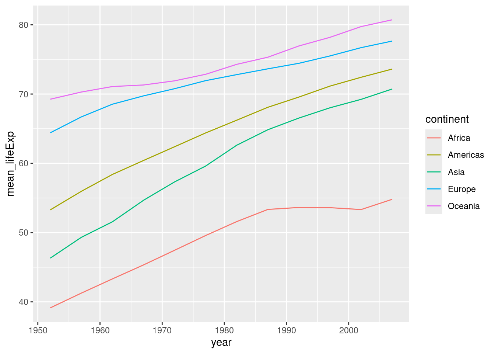
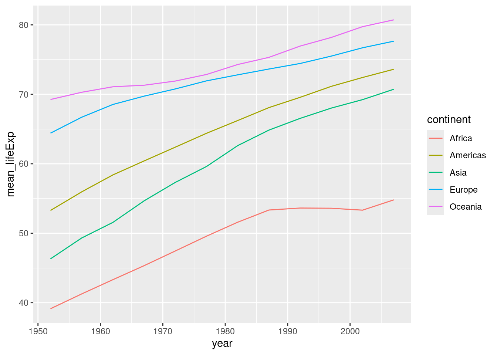
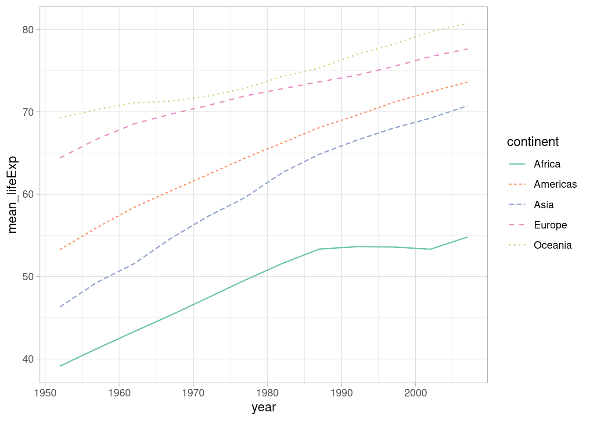
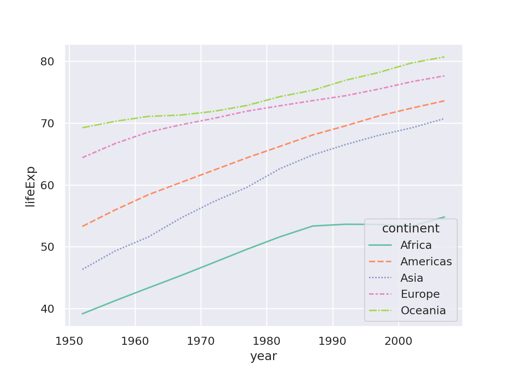
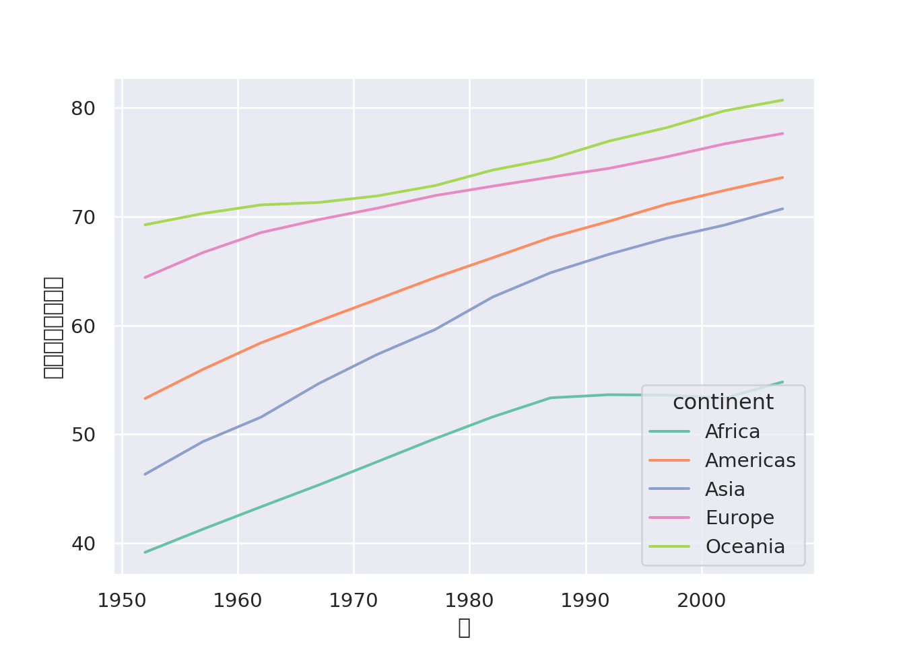

R

ここまで一通り、政治学でよく見るグラフの作成方法を学んできました。しかし、残念ながら、このままでは論文に載せられるものではありません。
この章では論文に載せても恥ずかしくないクオリティのグラフを作成し、保存する方法を学びます。
ベースとなるのは次のような大陸ごとの各年の平均寿命の平均値の折れ線グラフです。このグラフをもう少しキレイにしていきたいと思います。
R

Python
キレイな見た目のグラフを見るとテンションが上がる気がします。ggplot2ではいくつかのテーマがあります。次のようにしてテーマを変更することができます。
R
matplotlibでもテーマを変更することができます。
Python
seabornでもテーマを設定できます。
テーマと同様に色もいい感じにしたいと思います。ggplot2ではscale_color_...()（あるいはscale_fill_...()）を使って色を指定します。
R
seabornではcolor_palette()で色を指定します。
色が付いているグラフはキレイですが、色を正確に区別できない人には不親切でしょう。できる限り、color blind friendlyな、あるいはカラーユニバーサルデザインに準拠したカラーパレットを使用するか、色以外で区別するようにしましょう。
例えば、折れ線グラフにおいて線の種類で区別する場合は、次のようにします。
R

linetypeを使います。Python

styleを使います。点線は見にくいこともあるので、線を太くすると、より効果的かもしれません。
R
散布図の場合も同様に点の外見を変えることが重要です。
論文に載せるときは、x軸やy軸のラベル、凡例の内容などをキレイに整えたいと思います。まずは軸のラベルから取り掛かります。
R
labs()の中でラベルを上書きします。matplotlib/seabornの場合、まずfig, ax = plt.subplots()とおまじないを書きます。
plt.subplots()は2つのオブジェクトを作成するので、fig, ax =とします。Python

ax.set_xlabel/ylabel(...)で軸ラベルを調整します。ただし、そのままだと文字化けする場合があります。その場合はフォントを指定する必要があります。
Python
sns.set(font="Noto Sans CJK JP")とフォントを指定します。
HiraKakuProN-W3などでしょうか。なお、ggplot2でフォントを指定する場合は、次のようにします。
R
ggplot2もseabornも一度フォントを設定すると、全ての画像に反映されるので、スクリプトの冒頭で設定しておきましょう。次に凡例 (legend) も日本語にしようと思います。
R
name_continent <- c("アフリカ", "アメリカ", "アジア", "ヨーロッパ", "オセアニア")
ggplot(df_year_cont_life) +
geom_line(aes(x = year, y = mean_lifeExp, color = continent, linetype = continent), linewidth = 1) +
scale_color_brewer(palette = "Set2", labels = name_continent) +
scale_linetype(labels = name_continent) +
labs(x = "年", y = "平均寿命の平均値", color = "大陸", linetype = "大陸")c()でまとめたものをオブジェクトname_continentとして保存します。scale_color_brewer/scale_linetype()内のlabelsで日本語の大陸名で上書きします。labs()内のcolor/linetypeで凡例のタイトルを変更します。seabornの場合は少々ややこしいです。おまじないだと思って鵜呑みにしてください。
Python
name_continent = ["アフリカ", "アメリカ", "アジア", "ヨーロッパ", "オセアニア"]
fig, ax = plt.subplots()
ax = sns.lineplot(df_year_cont_life, x="year", y="lifeExp", hue="continent", errorbar=None)
ax.set_xlabel("年")
ax.set_ylabel("平均寿命の平均値")
handles, labels = ax.get_legend_handles_labels()
ax.legend(handles, name_continent, title="大陸")[]でまとめたものをオブジェクトname_continentとして保存します。ax.get_legend_handles_labels()で凡例の位置情報とラベルをhandles, labelsとして保存します。ax.legend()として作り直します。
handlesを入れます。name_continent）を入れます。titleで凡例のタイトルを変更します。matplotlib/seabornでは凡例がグラフ上に現れるので、（それが嫌な場合は）変更します。
fig, ax = plt.subplots()
ax = sns.lineplot(df_year_cont_life, x="year", y="lifeExp", hue="continent", errorbar=None)
ax.set_xlabel("年")
ax.set_ylabel("平均寿命の平均値")
handles, labels = ax.get_legend_handles_labels()
ax.legend(handles, name_continent, title="大陸", bbox_to_anchor=(1, 0.5), loc="center left", frameon=False)ax.legend()内のbbox_to_anchorで大まかな位置を設定します。
(0,0)、右上が(1,1)となります。locで凡例のどの部分が、上記で指定した座標に対応するかを決めます。
(1,0.5)に一致するようになります。frameon=Falseで凡例の枠を消します。凡例が見切れていますが、保存する際には見きれないようにするので安心してください。
個人的には凡例は下につけるのが好みです。
fig, ax = plt.subplots()
ax = sns.lineplot(df_year_cont_life, x="year", y="lifeExp", hue="continent", errorbar=None)
ax.set_xlabel("年")
ax.set_ylabel("平均寿命の平均値")
handles, labels = ax.get_legend_handles_labels()
ax.legend(handles, name_continent, title="大陸", bbox_to_anchor=(0.5, -0.15), loc="upper center", ncols=3, frameon=False)ggplot2の場合はtheme()の中で指定します。
R
ggplot(df_year_cont_life) +
geom_line(aes(x = year, y = mean_lifeExp, color = continent, linetype = continent), linewidth = 1) +
scale_color_brewer(palette = "Set2", labels = name_continent) +
scale_linetype(labels = name_continent) +
labs(x = "年", y = "平均寿命の平均値", color = "大陸", linetype = "大陸") +
theme(legend.position = "bottom")
ここまでのように、色やスタイル、軸のラベルと凡例を整えれば、論文などで載せられる（最低限の）クオリティのグラフになると思っています。
最後に、作成したグラフを保存したいと思います。まずは、画像の保存先として作業ディレクトリ内にfiguresフォルダを作成します。
ggplot2の場合、ggsave()という関数で、最後に作成したグラフを保存します。
R
theme_set(theme_light(base_family = "Noto Sans CJK JP"))
name_continent <- c("アフリカ", "アメリカ", "アジア", "ヨーロッパ", "オセアニア")
ggplot(df_year_cont_life) +
geom_line(aes(x = year, y = mean_lifeExp, color = continent, linetype = continent), linewidth = 1) +
scale_color_brewer(palette = "Set2", labels = name_continent) +
scale_linetype(labels = name_continent) +
labs(x = "年", y = "平均寿命の平均値", color = "大陸", linetype = "大陸") +
theme(legend.position = "bottom")
height/widthでサイズを指定します。matplotlib/seabornでは、fig.savefig()で画像を保存します。
Python
sns.set_theme(font="Noto Sans CJK JP")
sns.set_palette("Set2")
name_continent = ["アフリカ", "アメリカ", "アジア", "ヨーロッパ", "オセアニア"]
fig, ax = plt.subplots(figsize=(6,4))
ax = sns.lineplot(df_year_cont_life, x="year", y="lifeExp", hue="continent", errorbar=None)
ax.set_xlabel("年")
ax.set_ylabel("平均寿命の平均値")
handles, labels = ax.get_legend_handles_labels()
ax.legend(handles, name_continent, title="大陸", bbox_to_anchor=(0.5, -0.15), loc="upper center", ncols=3, frameon=False)
plt.savefig("figures/lifeExp_year_cont_py.png", bbox_inches="tight")p.fig.set_size_inches((w, h))でサイズを調整します。
wが幅、hが高さです。bbox_inches="tight"で凡例などが見きれないように保存します。